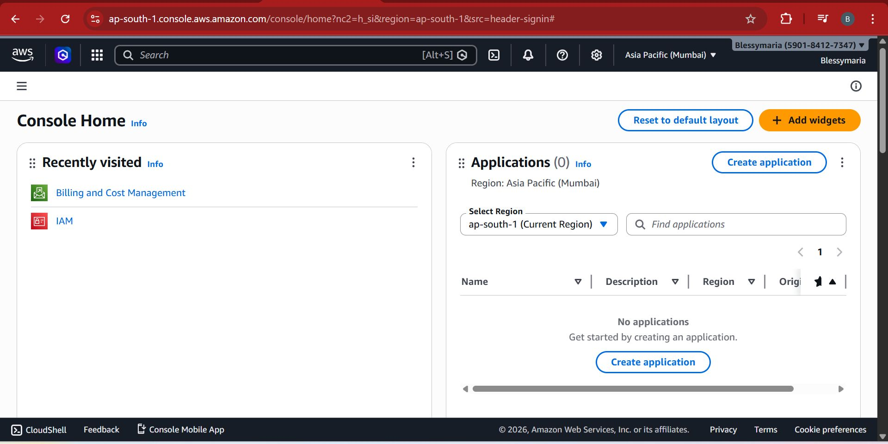

AWS Free Tier

Won’t I be charged from my bank account if I create an AWS account and provide my payment details? 🤔 I feel that when Amazon Web Services asks for bank or card details during signup, it discourages many people who are planning to explore the platform. A lot of beginners worry that money might get automatically deducted if they unknowingly use a paid service. Today, I signed up for the AWS Free Tier account, and honestly, I had the same apprehension. But I decided to go ahead with it anyway. From what I understood, AWS requires payment details mainly for identity verification and to prevent misuse of the platform. With the Free Tier, you get access to several services with usage limits that allow you to learn and experiment without cost (as long as you stay within those limits). You can access their free tier for 6 months, after which, your account will be closed automatically and your resources retained for 90 days. You can provide a credit card, debit card, or UPI during registration. So if this concern has been stopping you from creating an account and exploring cloud technologies - don’t let it hold you back. 😊
AWS IAM


As I started getting accustomed to the AWS Management Console, I spent some time practicing the components of AWS IAM (Identity and Access Management). I explored concepts such as: 1) Users 2) Groups 3) Policies 4) Roles I found the concepts of groups and policies particularly interesting. Creating groups, attaching policies (managed or custom), and then adding users to those groups seems extremely useful in large organizations. It simplifies permission management and saves a lot of time compared to assigning permissions individually. I’ve often heard the term Amazon EC2 mentioned alongside cloud computing, so I’m planning to explore that next.